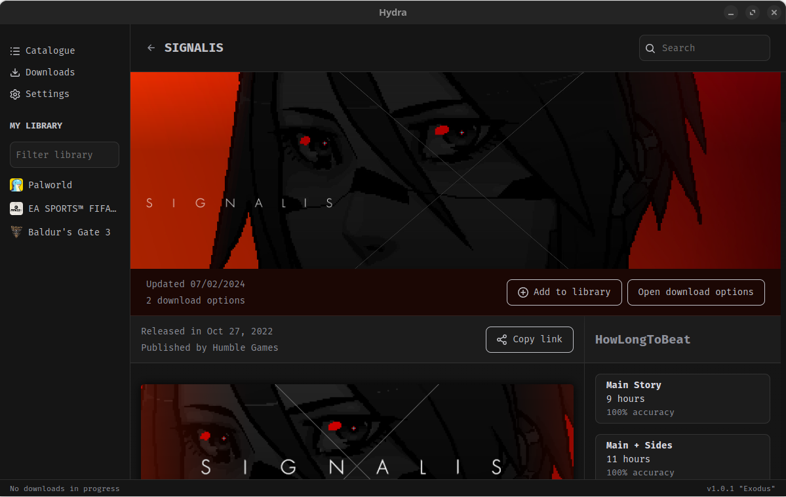

Experience the ultimate repacks launcher app.
Hydra Launcher is a open source launcher capable of searching for pirated games among the biggest repackers in the community.
Hydra Launcher is a open source launcher capable of searching for pirated games among the biggest repackers in the community.